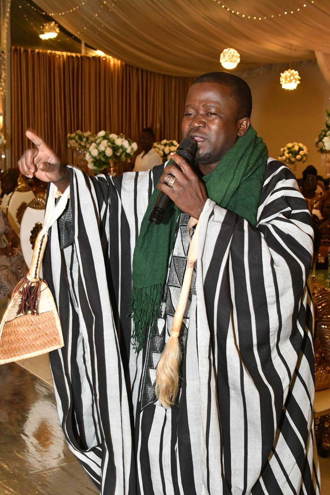
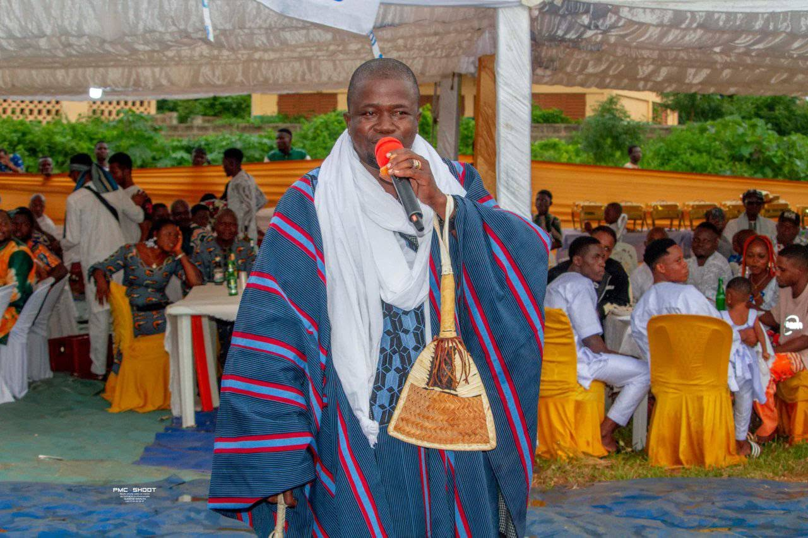
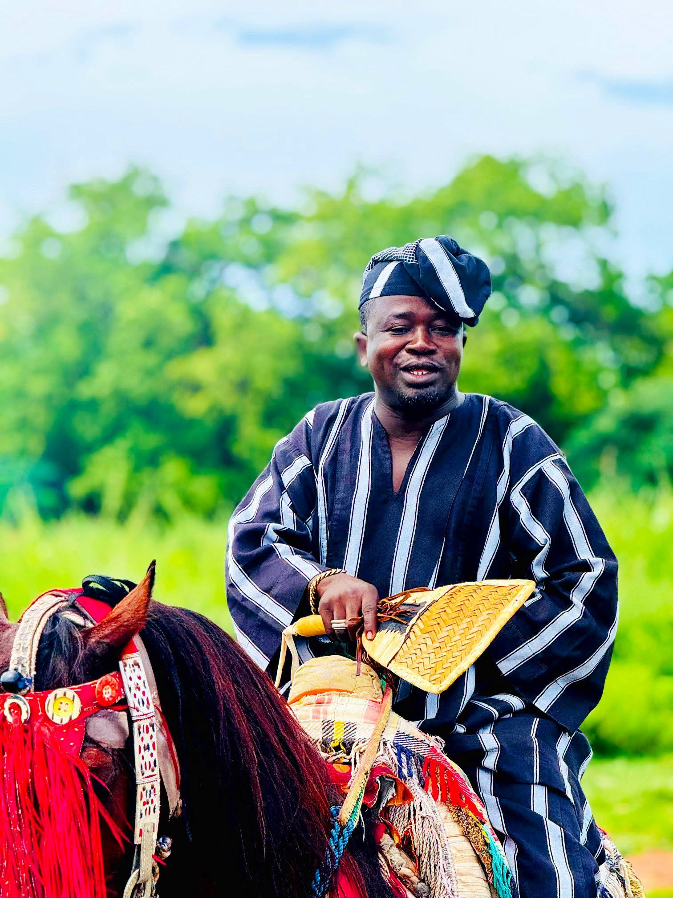
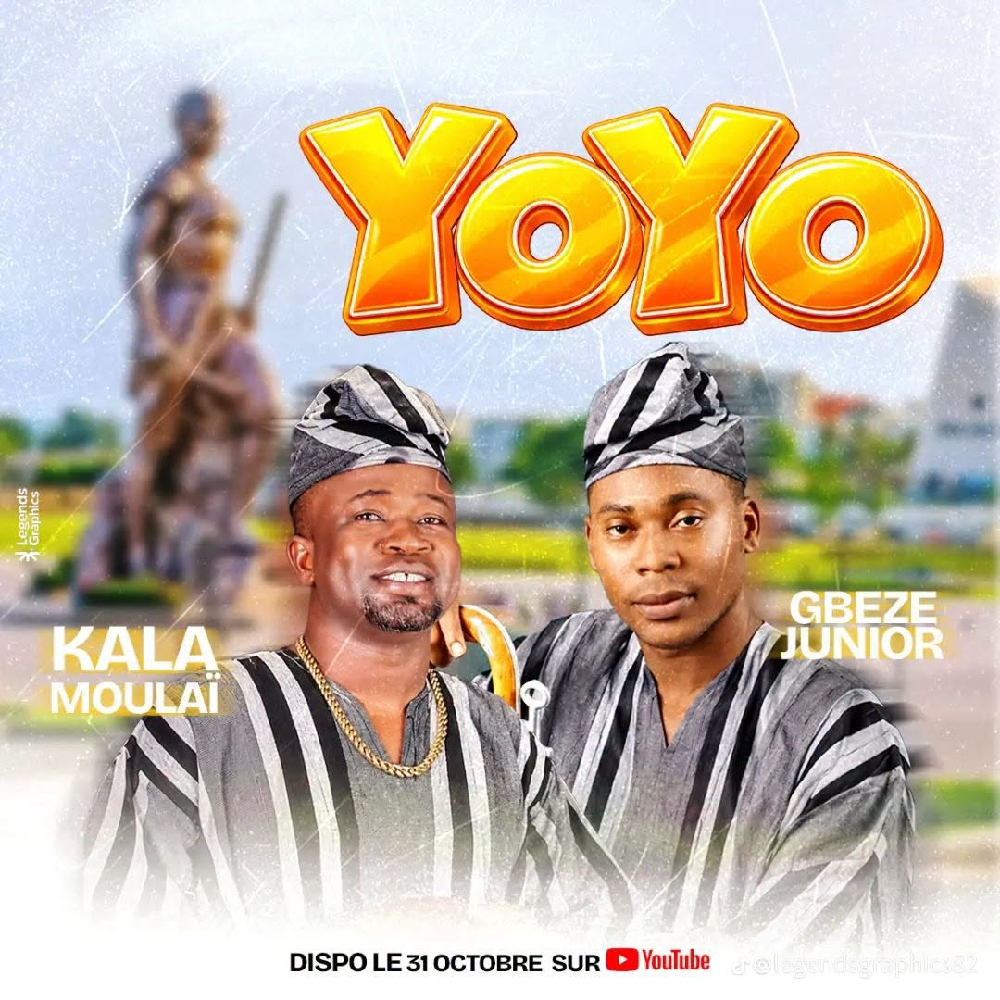

KALAMOULAÏ, de son vrai nom Idrissou Moussa, est une figure emblématique de la musique béninoise. Ancien membre du Ballet National, il incarne la richesse et la diversité culturelle du Bénin à travers ses compositions.
Originaire de Kouandé, dans le nord-ouest du Bénin, Idrissou Moussa, connu sous le nom de scène Kalamoulaï, s'est imposé comme l'une des plus belles voix de la musique béninoise. Passé maître dans l'art de chanter en Baatonu, Yoruba, Dendi et Fon, il incarne à lui seul la diversité culturelle du pays.
Passionné de danses traditionnelles, il est repéré en 2000 par Florent Eustache Hessou, alors Directeur du Ballet National du Bénin. Il y servira jusqu'en 2006, découvrant sa voix exceptionnelle au sein de la prestigieuse troupe. Sa carrière solo est lancée après une collaboration avec le groupe Les Frères de Sang sur le morceau "Yaye" (Paix).
Quatre albums qui témoignent de sa maturité artistique et de son enracinement culturel.
Premier album. Signifie "Les femmes".
Deuxième album. Signifie "Valeurs de la tradition".
Troisième album. Signifie "Ce qui nous pourchasse".
Quatrième album. La confirmation de son talent.




Un parcours jalonné de collaborations prestigieuses et de récompenses.
Membre de la prestigieuse troupe. Découverte de sa voix et apprentissage de la scène aux côtés de grands chorégraphes.
Participation au morceau "Yaye" (Paix). Début de sa carrière musicale et premières tournées internationales (Chine, Japon, France, Belgique).
Récompensé pour la musique moderne d'identité béninoise. Lauriers de la Culture.
Sacré au Bénin Golden Awards puis remporte le trophée de la meilleure musique moderne d'inspiration traditionnelle au SICA.
Célébration de deux décennies de musique à Parakou. Préparation d'un cinquième album entièrement en Fon.
Pour toute demande de booking, collaboration artistique ou partenariat, n'hésitez pas à nous contacter.